Dossiê Produto
Perfis
Funcionalidade acessada pelos seguintes perfis:
MTRADM
MTRSDNTTG
MTRSDNTTO
OBS: Solicitação de acesso via https://novoacessologico.caixa, selecionando o sistema SIMTR e, em seguida, os perfis desejados.
A Manutenção do Dossiê Produto pode ser acionada pelo dois caminhos: Dossiê Cliente ou pela opção no Menu: Dossiê Produto:
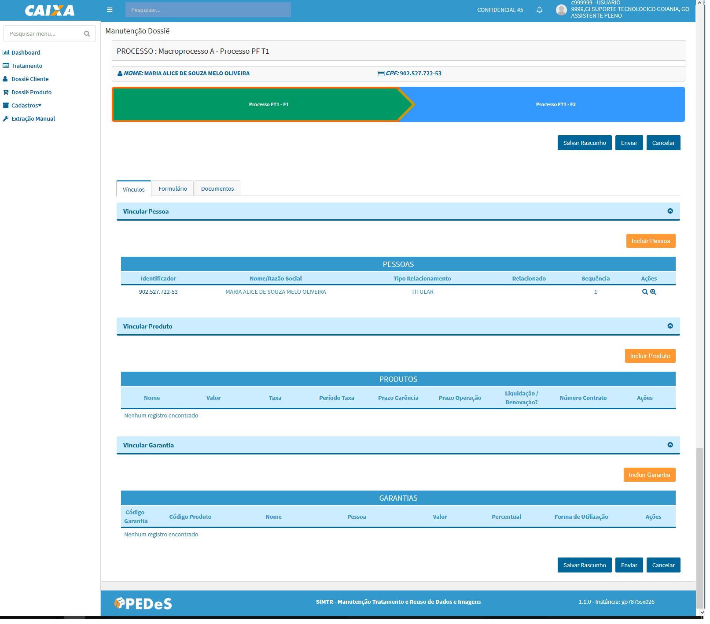
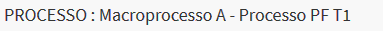 - apresenta a descrição do(s) processo(s) selecionado(s) no dossiê cliente;
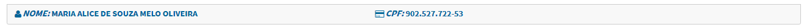 - Nome ou Razão Social / CPF ou CNPJ do dossiê cliente responsável pelo dossiê produto, quando a origem do cadastro do dossiê produto é pelo menu na lateral essa informação não é apresentada até que seja inserido o vínculo de pessoa correspondente.
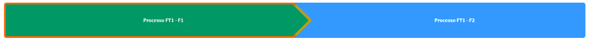 - apresenta as etapas configuradas para o processo:
Etapa na cor verde - representa a etapa atual do dossiê produto, objeto da manutenção;
Etapa na cor azul - representa a(s) próxima(s) etapa(s) do dossiê produto que será(ao) objeto(s) de manutenção, não permite manipular as informações apenas consulta;
Etapa na cor azul esmaecido - representa a(s) etapa(s) anterior(es) do dossiê produto que já foi(ram) objeto de manutenção, não permite manipular as informações apenas consulta;
A borda laranja na etapa significa qual etapa cujas informações estão sendo apresentadas no formulário.
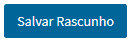 - primeira situação do dossiê produto, nem todo dossiê produto tem registro de histórico nessa fase, estes podem ser enviado direto para tratamento. Essa opção permite salvar o dossiê produto na situação "Rascunho", onde nessa situação é possível manipular quantas vezes necessárias as informações
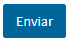 - essa opção quando acionada realiza as validações de obrigatoriedade para enviar um dossiê produto para unidade de tratamento e altera a situação do dossiê para "Aguardando Tratamento" e registra o histórico da movimentação nessa situação não é possível alterar mais nenhuma informação do dossiê produto.
- essa opção permite cancelar a criação ou alteração do dossiê produto, descartando todas as informações preenchidas e retornando para formulário do dossiê cliente que originou o direcionamento do formulário ou para tela inicial do sistema caso a origem seja pela consulta no menu da lateral.
Ao acionar a opção o sistema valida se existe alguma informação preenchida que não foi submetida (salva) e apresenta uma mensagem alerta para usuário informado que os dados serão descartados e se deseja continuar com a operação:
Positivo - o sistema descarta as informações e retorna para o formulário que originou o direcionamento;
Negativo - o sistema não realiza o cancelamento, mantém os dados da tela e aguarda a próxima movimentação do usuário.
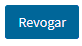 - essa opção permite realizar o cancelamento do dossiê produto salvo. Ao acionar a opção o sistema apresenta uma mensagem para confirmar a intenção de revogar o dossiê produto, após confirmação o sistema registra o histórico de cancelamento do dossiê produto.
O dossiê produto não permite mais nenhum tipo de manipulação de dados.
Apenas usuário da mesma unidade originadora do dossiê produto pode realizar a revogação do mesmo.
Vínculos
Nessa aba é realizada inclusão dos vínculos de pessoas(s),produto(s) e garantia(s) no dossiê produto.
Vincular Pessoa
Quando a inclusão do dossiê produto é originada pelo dossiê cliente o sistema apresenta cliente vinculado ao dossiê como o Titular ou Tomador (conforme parametrização) do dossiê produto:
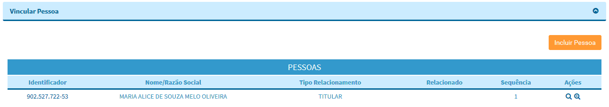
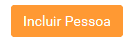 - quando acionado apresenta a modal para inclusão do vínculo.
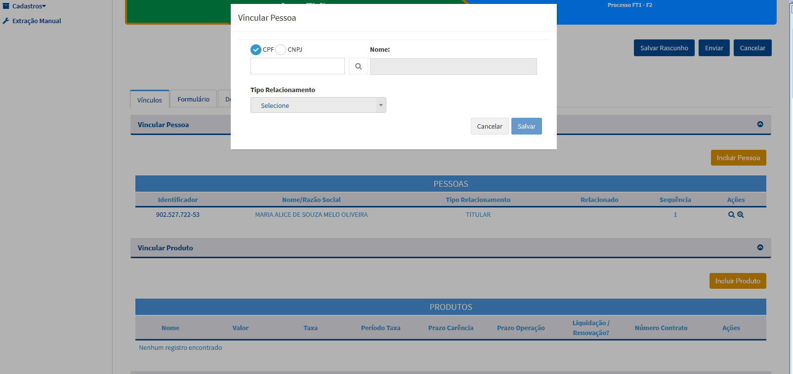
CPF/CNPJ - preenchimento da identificação do vínculo;
Nome - carrega o nome ou razão social do CPF/CNPJ informado, CPF o sistema realiza consulta no banco da RECEITA FEDERAL, CNPJ o sistema realizada consulta no SIISO;
Tipo Relacionamento - carregado com os tipos conforme parametrização para o processo/fase para seleção.
A opção Salvar é habilitada após preenchidas as informações: CPF, Nome e o Tipo de Relacionamento.
A modal de vincular pessoas também possibilita incluir um novo cliente, basta informar um novo CPF ou CNPJ que o sistema realiza o mesmo comportamento do formulário do dossiê cliente.
Após salvar as informações o sistema atualiza a lista de vínculo de pessoas.
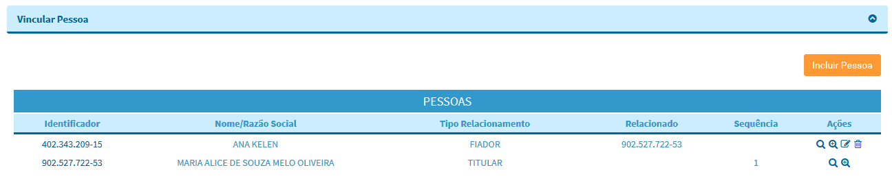
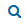 Pesquisar no SIMTR - apresenta as informações do dossiê cliente salvas no sistema, conforme apresentado na imagem abaixo:
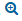 Pesquisar no SICLI - apresenta as informações do cliente no SICLI, conforme apresentado na imagem abaixo:
Editar vínculo pessoa - apresenta a modal de vínculo alteração. Essa opção não é apresentada para o vínculo responsável (dono) pelo dossiê produto, a seguinte tela é apresentada:
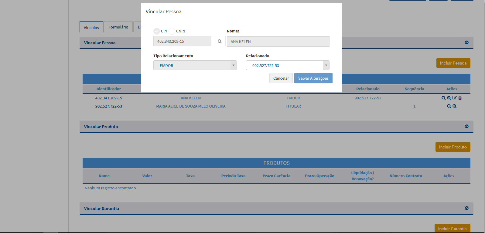
Apenas o campo “Relacionado” é passível de alteração.
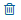 Excluir vínculo pessoa – opção que realiza exclusão do vínculo no dossiê produto, ao acionar a opção o sistema apresenta uma mensagem de confirmação para exclusão. Essa opção não é apresentada para o vínculo responsável (dono) pelo dossiê produto.
Para os tipos de relacionamento TITULAR o sistema apresenta o campo para informar a seqüência da titularidade.
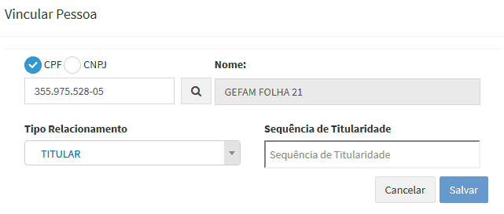


Vincular Produto
Realiza o vínculo de produto no dossiê produto.
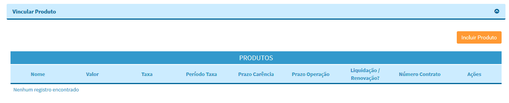
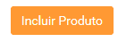 - quando acionado apresenta a modal para inclusão do vínculo.
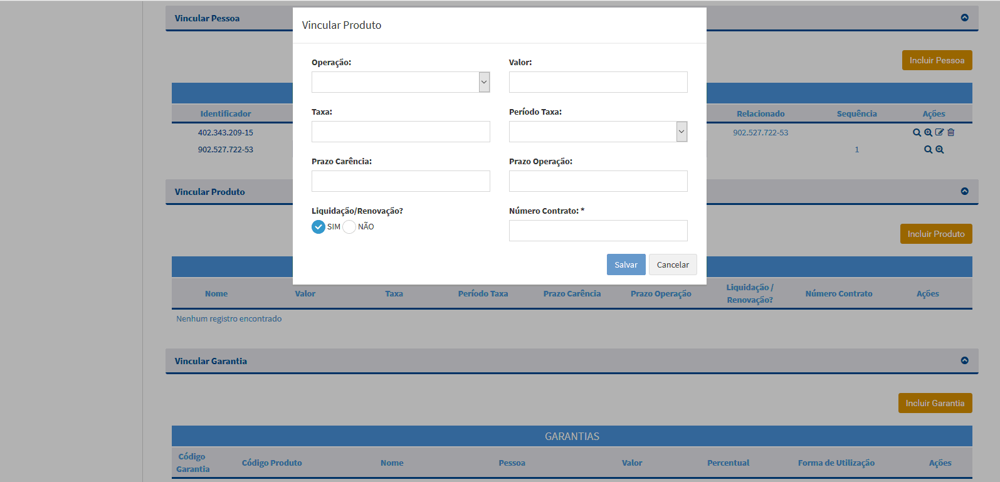
A opção Salvar é habilitada após preenchimento dos campos obrigatórios.
O sistema atualiza a lista de vínculo de produtos.
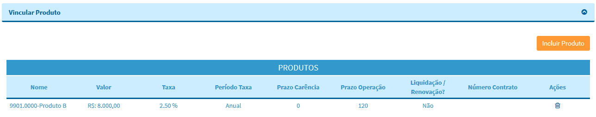
Excluir vínculo produto – opção que realiza exclusão do vínculo de produto no dossiê produto, ao acionar a opção o sistema apresenta uma mensagem de confirmação para exclusão.
Vincular Garantia
Realiza o vínculo de garantias no dossiê produto.
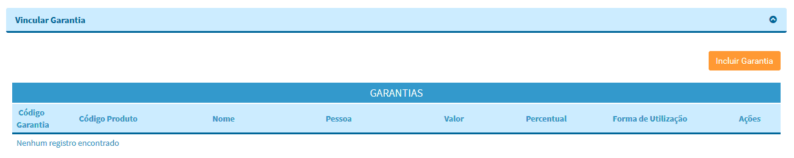
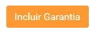 - quando acionado apresenta a modal para inclusão do vínculo.
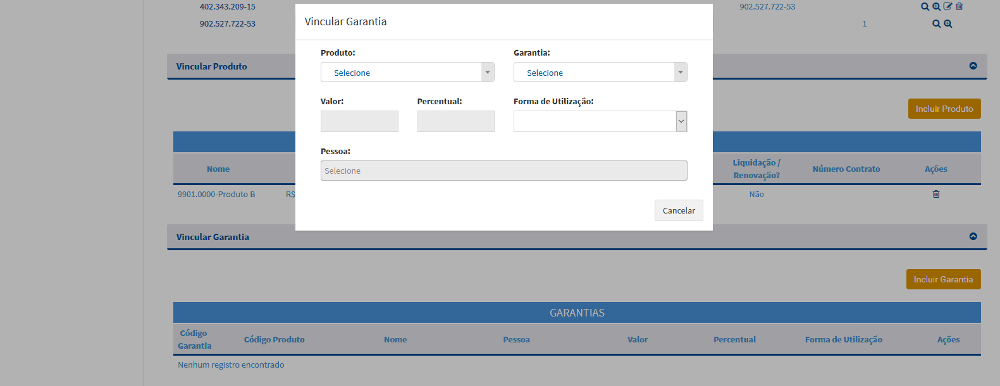
A opção Salvar é habilitada após preenchimento dos campos obrigatórios.
O sistema atualiza a lista de vínculo de garantias.
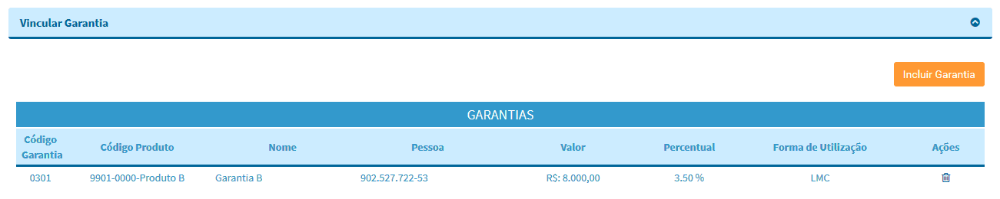
Formulários
Apresentação da aba Formulário é dinâmica, os campos são apresentados conforme a parametrização realizada para o processo/fase.

Documentos
Apresentação da aba Documentos e montada conforme a inclusão dos vínculos de pessoas, produto(s) e garantia(s) no dossiê produto. Para cada vínculo inserido é apresentada uma árvore documental com os tipos documentos definidos para o vínculo, processo e fase.
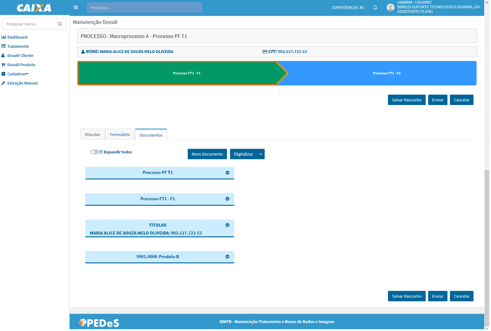
- expande apresentação dos tipos documentos vinculados as árvores documentais.
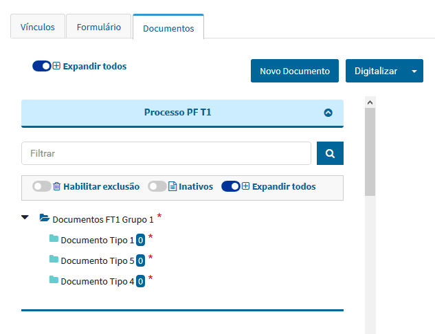
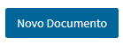 - permite realizar upload de uma imagem da máquina para classificação. Quando acionado o sistema apresenta a tela padrão do Windows para esse tipo de ação:
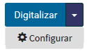 - apresenta o formulário para configuração da digitalização do SCANNER local, as configurações preenchidas são salvas no Local Storage. Ao acionar a opção a seguinte tela é apresentada:
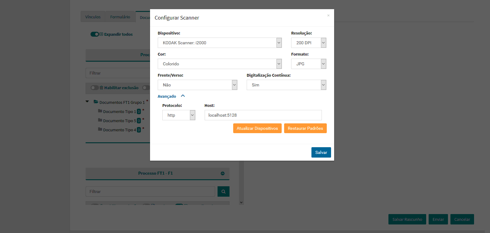
- Dispositivo – apresenta a lista dos dispositivos (scanner) instalados/conectados na máquina, padrão carregado o primeiro da lista, caso não houver será apresentado “Selecione”;
- Resolução – apresenta as opções: 200DPI, 300DPI, 400DPI, padrão carregado “200DPI”;
- Cor – apresenta as opções: Colorido e Escala Cinza, padrão carregado “Colorido”;
- Formato – apresenta as opções: JPG e PDF, padrão carregado “JPG”;
- Frente/Verso – permite scannear documentos frente e verso quando a opção selecionada for “Sim”, padrão carregado “Não”;
- Digitalização Continua – opção que permite puxar múltiplas páginas e digitalizar, padrão carregado “Não”.

Avançado
- Protocolo – apresenta as opções para seleção do protocolo de comunicação: HTTP e HTTPS
- Host – campo para inclusão da porta, apresentado com a máscara: localhost:porta
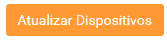 - realiza atualização da lista de dispositivos conforme as novas configurações informadas.
Qualquer impossibilidade de realizar atualização o sistema apresenta uma mensagem alerta para o usuário.
A lista obtida com sucesso as novas configurações são salvas no Local Storage.
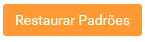 - desconsidera as configurações alteradas e retorna para configuração padrão, subscrevendo as configurações salvas no Local Storage.
Classificação documento
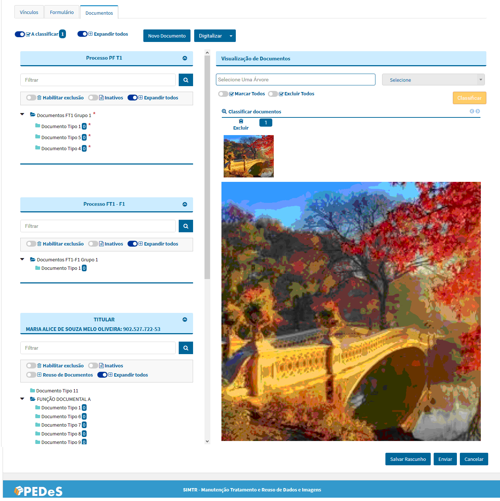
- 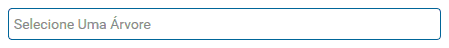 - carrega todos os vínculos (pessoa, garantia e produto) apresentados no dossiê produto para seleção.
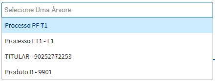
Após selecionado a árvore (vínculo) a combo de tipos documentos é carregada com os tipos parametrizados para o vínculo selecionado, processo e fase:
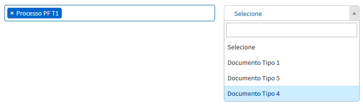
- permite selecionar todas as imagens para uma mesma classificação;
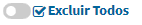 - permite realizar exclusão da(s) imagem(ns) apresentada(s) para classificação, após acionada a opção o sistema apresenta uma mensagem de confirmação da operação;
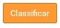 - opção habilitada após selecionada a árvore e o tipo de documento para classificação.
Realizada a classificação, o sistema apresenta o documento classificado na árvore correspondente, o padrão de nomenclatura do documento classificado é o seguinte: data – hora – matrícula responsável – quantidade de imagem classificada.
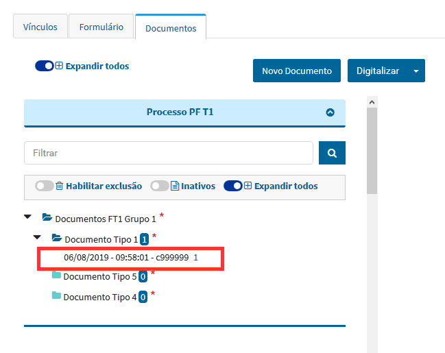
Consulta documento
A consulta do documento classificado apresenta as seguintes opções:
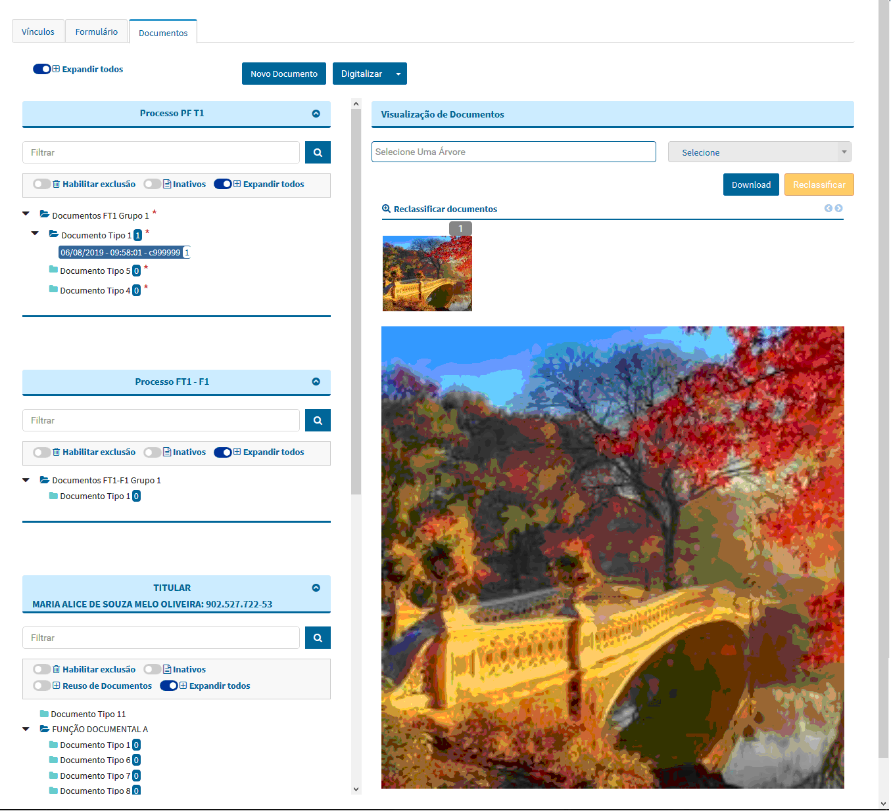
- 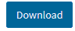 - permite realizar o download do documento consultado no formato PDF, ao acionar opção o sistema realizar procedimento padrão do Windows para esse tipo de ação:
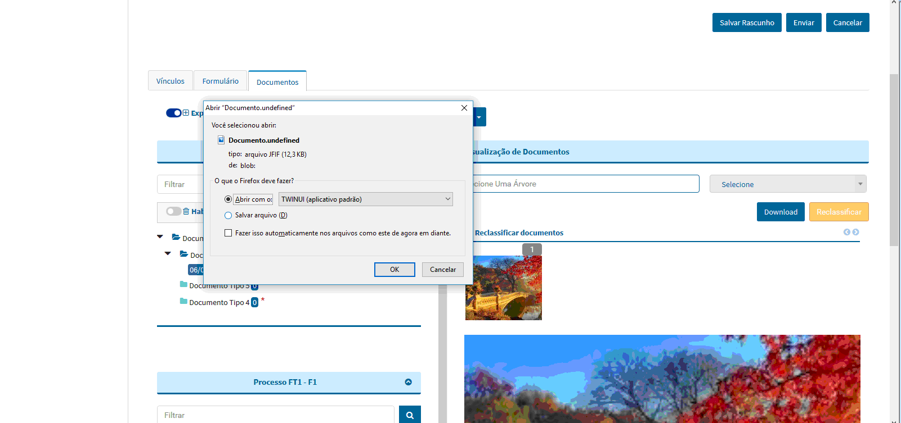
- 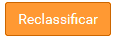 - opção habilitada quando selecionada uma árvore e o tipo documento para reclassificação. No exemplo abaixo o sistema remove o documento do Tipo 1 e reclassifica para o Tipo 5.
Nesse exemplo a reclassificação foi realizada na mesma árvore documental, mas pode ser realizada para árvore documental diferente do dossiê produto.

Opções de manipulação da árvore de documentos
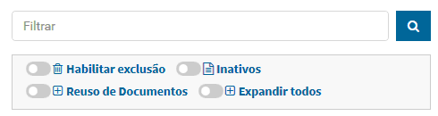
Filtrar – permite realizar uma consulta rápida na árvore de documentos, conforme o parâmetro informado e clicado no ícone referente à pesquisa o sistema refina os registros da árvore.
Habilita exclusão – quando acionado (com um clique) habilita a exclusão para os documentos que ainda não foram submetidos (salvos) no dossiê produto, documentos salvos no dossiê produto não são passíveis de exclusão.
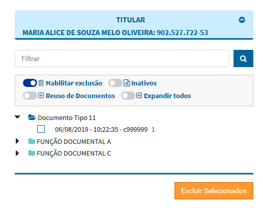
Inativos – quando acionado (com um clique) apresenta os documentos submetidos (salvos) no dossiê produto cuja data de validade do documento é menor que a data atual. A consulta padrão é apresentar apenas os documentos ativos do dossiê produto.
Expandir todos – quando acionado (com um clique) apresenta os documentos ativos submetidos e/ou classificados no dossiê produto. Apresentação padrão da árvore de documentos é apresentar até o nível da função documental, a opção permite expandir os documentos submetidos e/ou classificados.
Reuso de documentos – quando acionado (com um clique) apresenta os documentos que foram submetidos no dossiê cliente e que estão vigentes para reuso no dossiê produto, essa opção é apresentada apenas para a(s) árvore(s) documental(is) de vínculo de pessoas.

Histórico
Essa aba é apresentada após acionado a opção Salvar Rascunho ou Enviar.
Essa aba apresenta todas as movimentações do ciclo de vida do dossiê produto.
As seguintes informações são apresentadas:
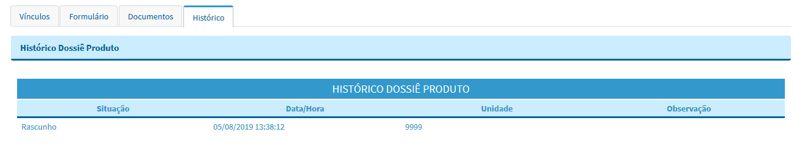
Verificações
Essa aba é apresentada após tratamento do dossiê produto pela área de conformidade.
Essa aba apresenta o resultado das verificações realizadas no dossiê produto.
O sistema possibilita a consulta do resultado de todas as fases do dossiê ou por fase:
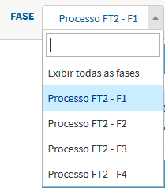
As seguintes informações são apresentadas:
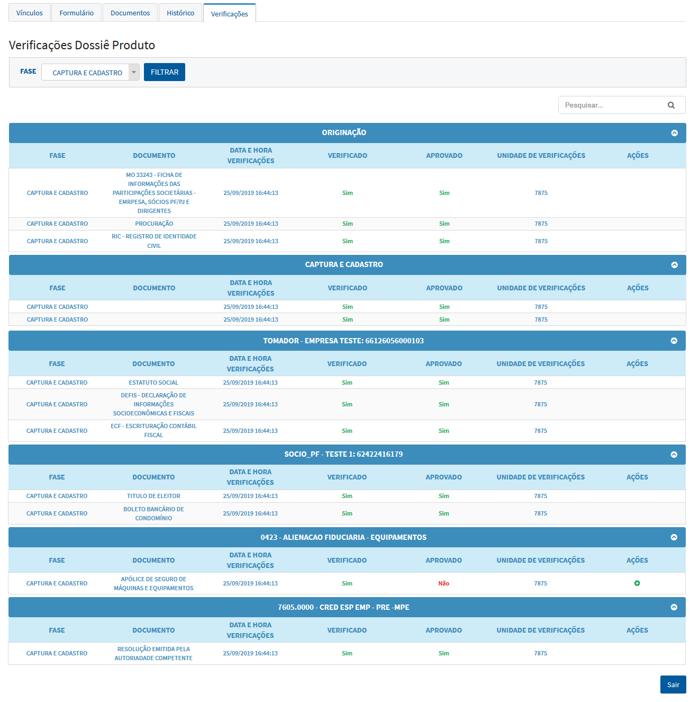
- Fase – apresenta a fase do processo que a verificação foi realizada;
- Documento – apresenta o nome do documento verificado no processo/fase, para histórico de verificação da fase a informação do documento fica vazia;
- Data e hora verificação – apresenta a data e hora que a verificação do dossiê produto foi concluída;
- Verificado – indicativo se o checklist do documento foi verificado, documentos que não são obrigatório para fase sua a verificação no tratamento é opcional;
- Aprovado – indicativo da situação da verificação do documento;
- Unidade de verificação – apresenta a unidade responsável por realizar a verificação do dossiê produto;
- Ações - apresenta a opção para visualizar o(s) comentário(s) informado(s) pela área responsável pela verificação, caso preenchido, porque os comentários na verificação não são obrigatórios:
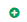 - quando acionado o sistema apresenta os comentários preenchidos durante a verificação da fase ou documento:
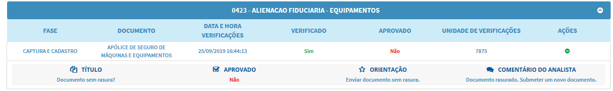